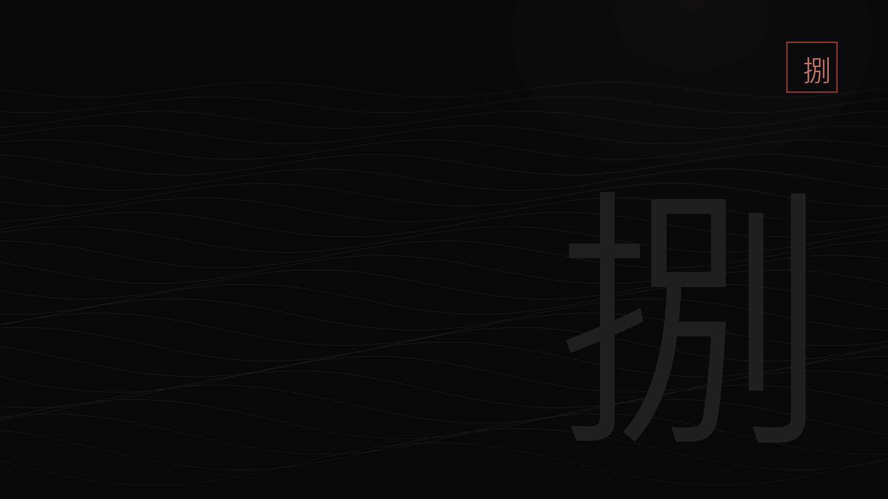

紫色任務錯過不再
真結局結算
戲夢山莊正門
在正門前，系統會依你的完成度給出提示。此時應已完成：溪谷深處、虛空幻象、機關船、浮華引、幻術琵琶、崑崙三傑、泣聲何來、夢差的幻象、紅房子、湖心秘密，以及血脈覺醒的五根龍柱。缺一項，真結局就不會觸發。
錯過條件這是最後可回頭的節點之一；錯過就只能下一輪。
真結局資格

戲夢山莊是真結局的最後一道門檻。踏入之前，十個紫色任務與五根龍柱必須全部完成；踏入之後，部分支線會開始失效。這裡的頭目不多，但每個都關係到最後的選擇。
進入戲夢山莊前，確認：十個真結局紫色任務全完成、五根龍柱全挑戰、湖心秘密與血脈覺醒都已完成。踏入之後，部分支線會永久失效。
只保留確認對應的頭目實機畫面；其餘一律用名刺卡，避免圖不對題。
 頭目名刺
頭目名刺
 頭目名刺
頭目名刺
 頭目名刺・會錯過
頭目名刺・會錯過
完成度只存在你的瀏覽器；換裝置不會同步。